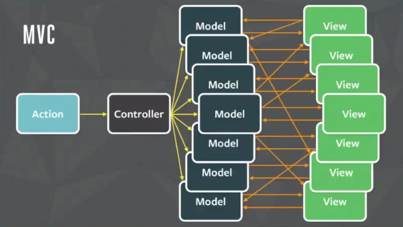

Flux - это архитектура единого потока данных. Он был разработан на Facebook вместе с библиотекой React View в 2011 году. Он делает акцент на создании явных и понятных путей обновления данных вашего приложения, что упрощает отслеживание изменений в процессе разработки и облегчает поиск и устранение ошибок.
Тут bug)
До flux facebook исползовал MVC...
Архитектура потока данных - MVC

Архитектура потока данных - Flux
Как использовать Flux?
Например у нас есть интернет магазин.
Заказчик добавил товар в карзинку.
Отправим запрос на сервер.
Получаем запрос от сервера.
На диспечер попадает action.
У нас есть три хранилише и action попадает на CartStore и обрабативает handleCartChanged().
Отправляем измененую состаяние cart на View (DOM).